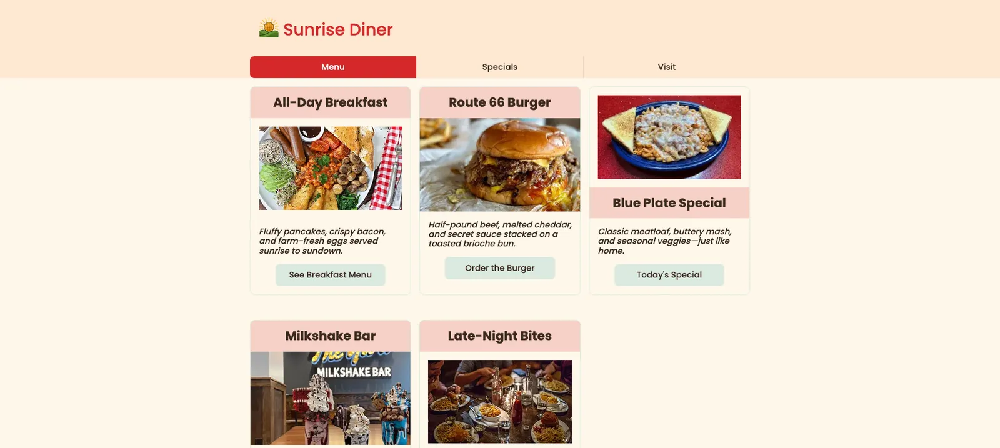

Learning SCSS in DWDD 2610
Introduction
In Fall 2025, I learned a variation of CSS called SCSS in my DWDD 2610 class with Paul Cheney. The main change between CSS and SCSS is SCSS's ability to nest styles inside other styles. Designers have significantly more freedom with SCSS; for example, they can set a color once and have it apply to all of the elements nested inside.
Another very useful thing is replacing individual colors with $brand-color values, so you can change what those values equal and effectively revamp an entire site while only changing a few words in the SCSS variables sheet. SCSS stands for Sassy Cascading Style Sheets.
What happened
Over the semester I learned more about SCSS, and it was a major and useful step up from regular CSS because of its wide capabilities. As the semester progressed, I added more useful SCSS elements to my sites. Rather than start a new file every time, I used the elements from my previous sites, and because of the $brand-color values in the variables sheet, I could easily change the colors and styles of those elements to fit each new site's theme.
Another benefit of SCSS is its ability to generate percentages of color opacity. I was able to overlay colors more easily because of this feature, and it works with the $brand-color variables in the variables sheet.
The impacts of SCSS are versatile. I applied SCSS to icon animations, and was able to edit them much more easily because of it.

Conclusion
Because of what I learned about SCSS, I was able to create more intricate and visually pleasing websites. I was able to stick more closely to the structure of these sites, and their inner logic made more sense to me.
SCSS is more similar to HTML in that way, as it smiles upon organization more than traditional CSS does.
My GitHub repositories Module 6: X-Mobile Module 4: Diner Original assignment (PDF)